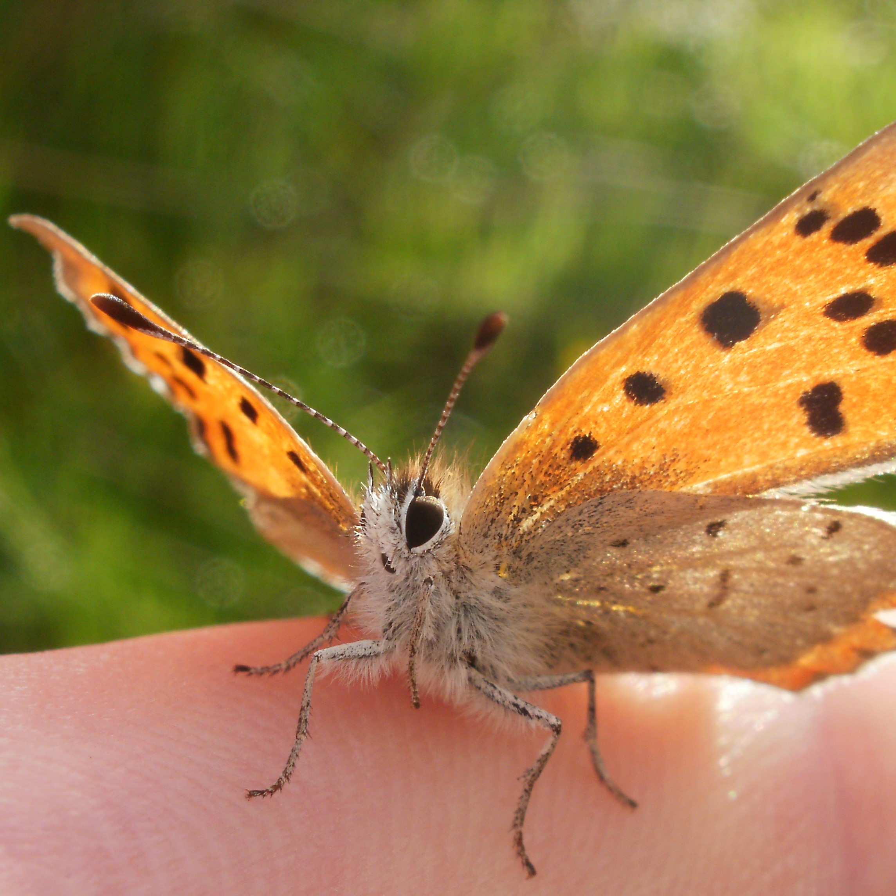
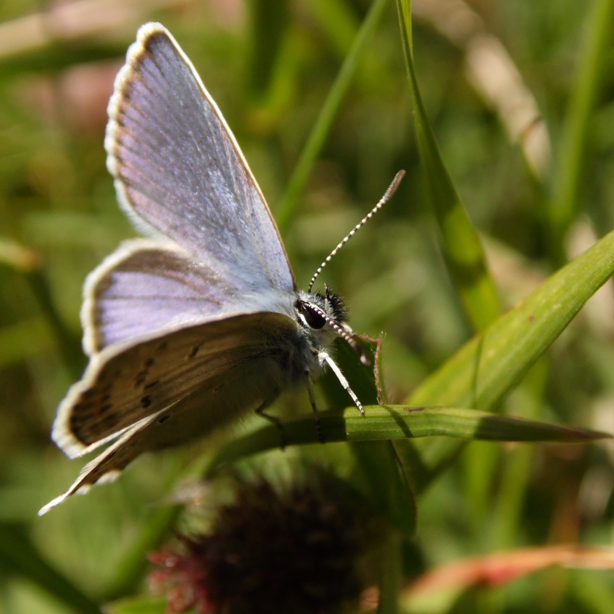
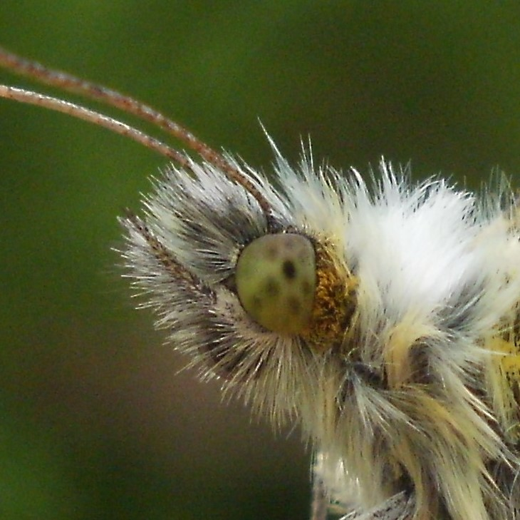
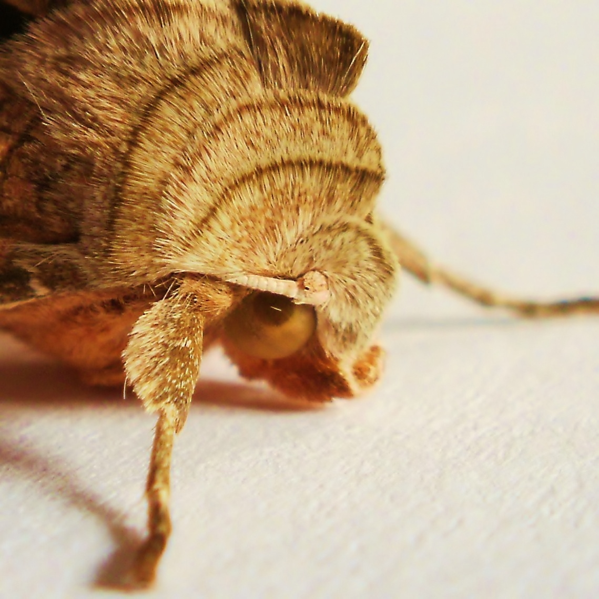
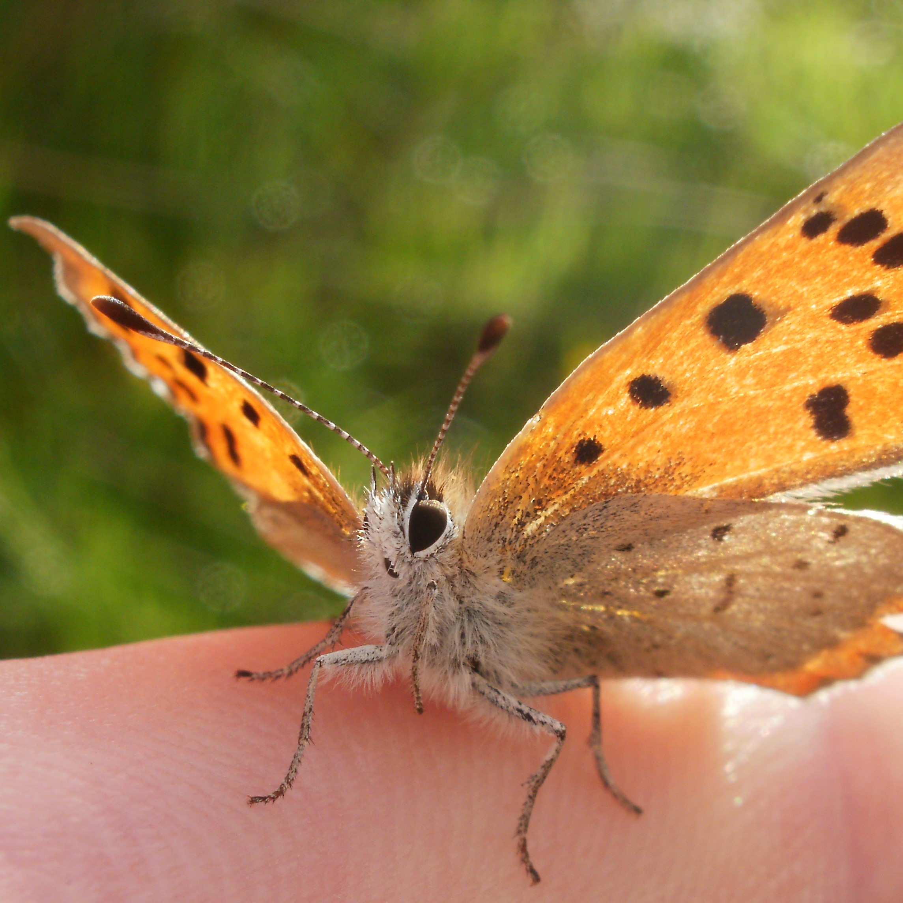
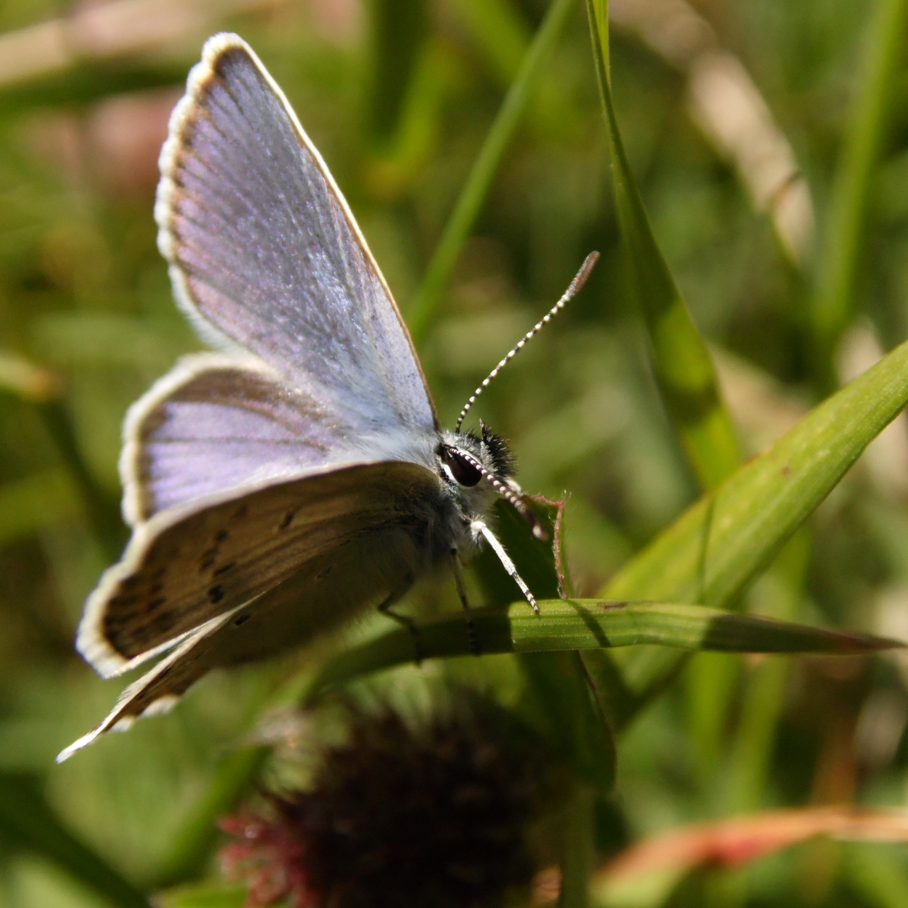
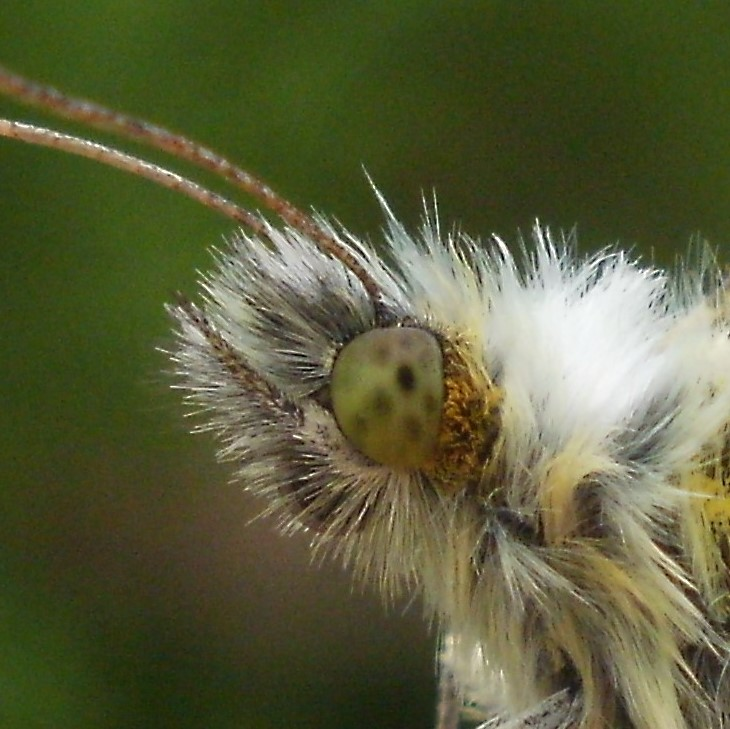
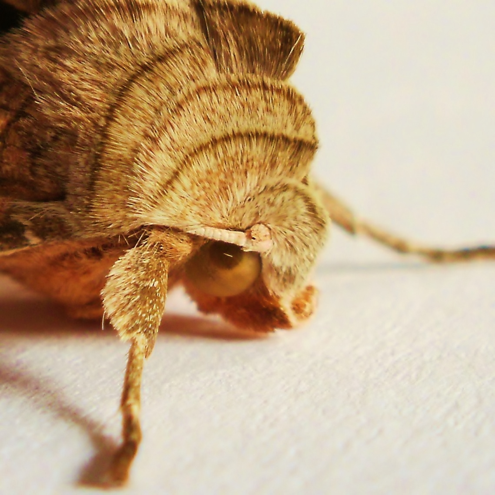

BLOG 1: The CaterpillarBLOG 2: meticulosaPHOTOSVIDEOSNI Micros 2016Periodic tableDoctor Who theme
Welcome to my website!
I'm a guy from Belfast, Northern Ireland. When I'm not studying for my BSc at St Andrews. I blog sporadically about cool stuff in general and recording and rearing moths in particular, livened up with a few photos and videos. During the Matt Smith years of Doctor Who I composed my own arrangement of the theme music which ran to 83 iterations and drove my family up the wall. Lately I've been curating a customisable periodic table and crunching the county distributions for the NI micro-moth checklist (open that one in IE). And now I'm designing a website from the group up as a hub for my adventures. You're reading it now. Happy rummaging! :)
    
   
Powered by GitHub Pages